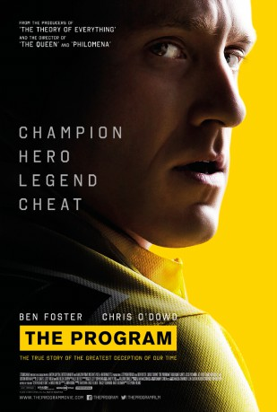

gesehen am 11.11.2016
gesehen am 11.11.2016Alternativ: The Program gesehen am 11.11.2016
 
 IMDB-Wertung: 6.5 / 10
IMDB-Wertung: 6.5 / 10  Metascore:
Metascore: 
Nichts und niemand kann Lance Armstrong aufhalten - nicht einmal Hodenkrebs: Er besiegt seine Gegner, er besiegt seine Krankheit. Und er gewinnt die Tour de France, nach Belieben, wie es scheint, sieben Mal in Folge. Doping kann ihm nie nachgewiesen werden. Dann wird der irische Journalist Walsh auf Armstrong aufmerksam. Er entdeckt Unregelmäßigkeiten und ist bald überzeugt, dass der Radrennfahrer mit der unstillbaren Lust am Gewinnen betrügt. Viele Freunde macht sich Walsh mit seiner Entdeckung nicht.
Jahr: 2015
Dauer: 103 Minuten
FSK:
Land: England Studio: StudioCanalTonspuren: DTS - ,
Untertitel: Deutsch, Englisch,
Auflösung: 1080p (1920x808) Größe: 6031 MB
Genre: Drama, Sport, Biographie
Regisseur:  Stephen Frears
Stephen Frears
Drehbuch: John Hodge, David Walsh
Soundtrack: Alex Heffes
Darsteller:
 Ben Foster als Lance Armstrong
Ben Foster als Lance Armstrong Chris O'Dowd als David Walsh
Chris O'Dowd als David Walsh Guillaume Canet als Medecin Michele Ferrari
Guillaume Canet als Medecin Michele Ferrari Jesse Plemons als Floyd Landis
Jesse Plemons als Floyd Landis Lee Pace als Bill Stapleton
Lee Pace als Bill Stapleton Denis Ménochet als Johan Bruyneel
Denis Ménochet als Johan Bruyneel Edward Hogg als Frankie Andreu
Edward Hogg als Frankie Andreu Dustin Hoffman als Bob Hamman
Dustin Hoffman als Bob Hamman Peter Wight als Sunday Times editor
Peter Wight als Sunday Times editor Nathan Wiley als Charles Pelkey
Nathan Wiley als Charles Pelkey Michael G. Wilson als Lance's Doctor
Michael G. Wilson als Lance's Doctor Josh O'Connor als Rich
Josh O'Connor als Rich Sam Hoare als Stephen Swart
Sam Hoare als Stephen Swart Saskia Reeves als Conference Doctor
Saskia Reeves als Conference Doctor Adam LeFevre als Jeffrey Tillotson
Adam LeFevre als Jeffrey Tillotson J.D. Evermore als Tailwind Executive
J.D. Evermore als Tailwind Executive John Schwab als Travis Tygart
John Schwab als Travis Tygart Christy Meyer als U.S. Sports Journalist
Christy Meyer als U.S. Sports Journalist Lesa Thurman als Woman in Bookshop
Lesa Thurman als Woman in Bookshop Thomas Dekker als Peloton
Thomas Dekker als Peloton Emilio Aniba als Restaurant Guest , uncredited
Emilio Aniba als Restaurant Guest , uncredited Lasco Atkins als Journalist , uncredited
Lasco Atkins als Journalist , uncredited Ancuta Breaban als Sales Person , uncredited
Ancuta Breaban als Sales Person , uncredited Pamela Betsy Cooper als Restaurant Diner , uncredited
Pamela Betsy Cooper als Restaurant Diner , uncredited Nick Donald als Customer at Book Signing , uncredited
Nick Donald als Customer at Book Signing , uncredited Claire Greasley als Press Camera Woman , uncredited
Claire Greasley als Press Camera Woman , uncredited Bryan Greenberg als Floyd's buddy , uncredited
Bryan Greenberg als Floyd's buddy , uncredited Michael Haydon als Surgeon , uncredited
Michael Haydon als Surgeon , uncredited Ashley Hudson als Press , uncredited
Ashley Hudson als Press , uncreditedDatei: X:\2015(N-Z)\Program - Um jeden Preis, The (2015, FSK, 1920x808).mkv seit 22.01.2016
Festplatte: HD 2015(A-Z)
 Es gibt insgesamt 161 Filme in der Gruppe '2015(N-Z)'
Es gibt insgesamt 161 Filme in der Gruppe '2015(N-Z)'